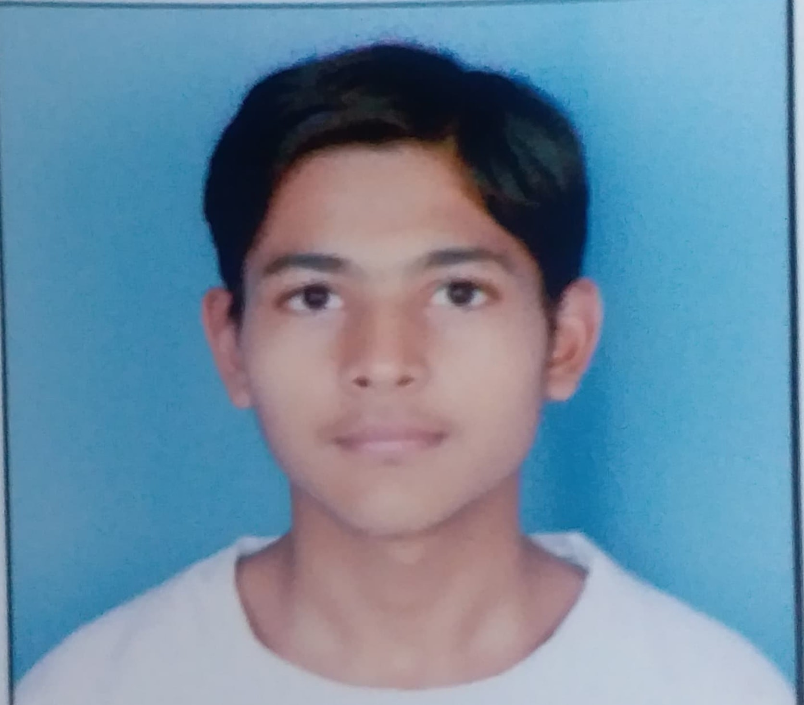

Mudit Gupta

Summary
Hardworking and quick learner pursuing a B.Tech in Computer Science and Engineering. Seeking opportunities to apply my technical, analytical, and leadership skills to challenging projects while contributing to personal and organizational growth.
Education
- B.Tech in Computer Science and Engineering.
Amity University,Noida (2022-Present)
- CGPA: 8.7
- 50% Merit Scholarship recipient for two consecutive years.
- 12th Grade
Dashmesh Public School, Faridkot(2022)
- Matriculation
D.A.V Public School, Kotkapura (2020)
Technical skills
- Programming Languages: C, C++, Python
- Data Structures and Algorithms: Knowledge up to linked lists
- Development: Basics of Android Development
- Tools: Overleaf
- Web Development: Currently learning
Certification
- Python for Data Science (NPTEL)
- The Joy of Computing using Python
Leadership & Extracurricular Activities
- Team Lead
Code Campers Club, Amity University
- Zone level Basketball Player
- Public Speaking Classes.
Attended Gurukul Drona, Ludhiana
- Volunteer
Member of Kind Beings NGO
Strengths
- Hardworking and quick to understand concepts
- Strong analytical and problem-solving skills
- Effective team leadership abilities
Interests
- Web Development
- Basketball
- Public Speaking